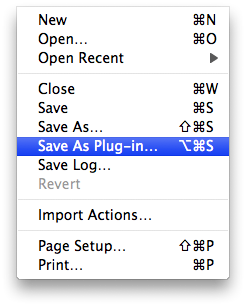
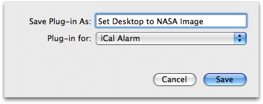
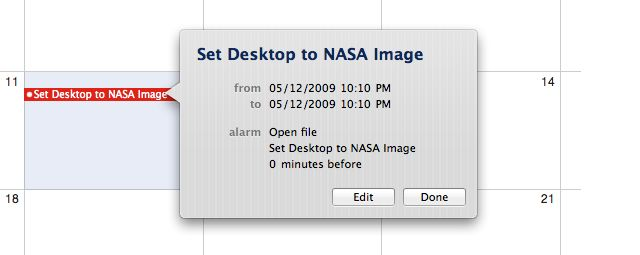
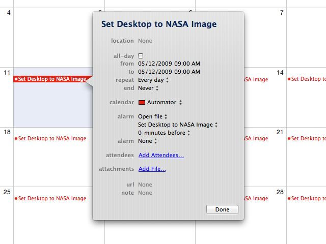

Tutorial 03: Saving as iCal Plug-in
To enable the workflow to be executed on a daily schedule, it will be saved as an event alarm to the iCal application. Before continuing this tutorial, switch to iCal and create a new calendar by selecting New Calendar from the iCal File menu. Name the calendar Automation, and leave it selected as the active calendar.

Back in Automator, save the workflow by selecting Save As Plug-in… from Automator’s File menu. A sheet will drop-down in the workflow window.
Name the workflow Set Desktop to NASA Image and choose iCal Alarm as the plug-in option from the popup menu.

Click the Save button and the workflow will be saved as an application and linked as an alarm to an event in the current day in the selected iCal calendar.

Click the Edit button in the event dialog, and set a time for the event to happen and set it to repeat daily. You will automatically get a new desktop picture every day!
